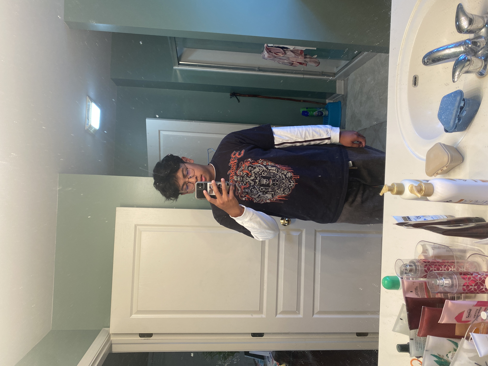

Discord: andrewtolentino#7993
Hi my name is Andrew Tolentino and I am 18 years old. I live in Bolingbrook Illinois and I've lived here my whole life. I have an older brother that also attended Lewis University and graduated here in May of 2022. I chose to do computer science because my dad convinced me to go in this field and my uncle also works in this field as well and encouraged me also. I play club volleyball here at Lewis and I also have a girlfriend that goes to Lewis as well.
I hope to learn the basics of coding languages and I hope to be able to use that information on my own outside of class. I hope to learn all the other terminology involved with computer science so I can have an even deeper understanding of computer science that isn't the coding languages. In the course I hope to learn how to not procrastinate and to understand what the working environment and the type of work that I would be working on in the future once I graduate. I hope to learn how to work efficiently and not to cram all my work in one day.
What I like to do on my free time is I like to hang out with my girlfriend all the time and I like to do basically everything with her. I also really like to play volleyball and I am currently playing for the club here on campus. I also really like to work out and go to the gym. I really like going to the gym with my friends and my girlfriend and I enjoy that a lot. I also like to skateboard in my freetime as well.
A fun fact about me is that I played piano competitively for 6 years and I have won awards for it. I traveled to different states to be involved in competitions called the American Guild of Music where people across the country would come and compete. Another fun fact about me is that I have a dog. She is a Shih-Tzu and Bichon mix and her name is Asia.
goodbye